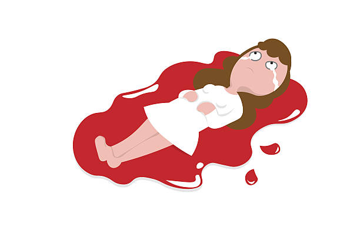
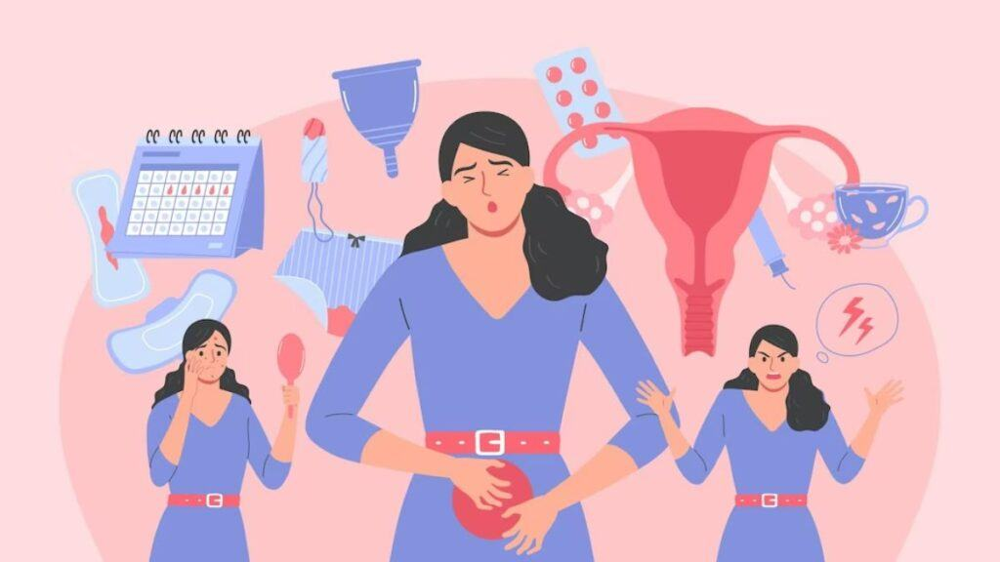

<div class="d-flex justify-content-center align-items-center mb-0 mt-0" style="height: 120vh;">
  <div id="carouselExampleDark" class="carousel carousel-dark slide my-10 mx-10 w-75 h-75 px-10 rounded-4xl">
    <div class="carousel-indicators">
      <button type="button" data-bs-target="#carouselExampleDark" data-bs-slide-to="0" class="active" aria-current="true" aria-label="Slide 1"></button>
      <button type="button" data-bs-target="#carouselExampleDark" data-bs-slide-to="1" aria-label="Slide 2"></button>
      <button type="button" data-bs-target="#carouselExampleDark" data-bs-slide-to="2" aria-label="Slide 3"></button>
    </div>
    <div class="carousel-inner">
      <div class="carousel-item">
        
        <div class="carousel-caption d-none d-md-block">
          <h2 class="font-bold">Why Sanitation For Women Matters ?</h2>
          <p>The United Nations Sustainable Development Goals are 17 initiatives to drastically improve the livelihood of people and the planet by 2030. Goal number 6 reads, “Ensure availability and sustainable ma...</p>
        </div>
      </div>
      <div class="carousel-item" data-bs-interval="10000">
        
        <div class="carousel-caption d-none d-md-block">
          <h2 class="font-bold">What Are Period Pain And What To Do ?</h2>
          <p>Menstruation, or period, is normal vaginal bleeding that happens as part of a woman's monthly cycle. Many women have painful periods, also called dysmenorrhea. The pain is mo...</p>
        </div>
      </div>
      <div class="carousel-item active" data-bs-interval="2000">
        
        <div class="carousel-caption d-none d-md-block">
          <h2 class="font-bold">World Menstrual Hygiene Day, 2024</h2>
          <p>Each year on May 27 the world comes together to celebrate Menstrual Hygiene Day to create awareness about menstruation, provide safe and hygienic practices to girls, and eradicate persisting taboos an....</p>
        </div>
      </div>
    </div>
    <button class="carousel-control-prev" type="button" data-bs-target="#carouselExampleDark" data-bs-slide="prev">
      <span class="carousel-control-prev-icon" aria-hidden="true"></span>
      <span class="visually-hidden">Previous</span>
    </button>
    <button class="carousel-control-next" type="button" data-bs-target="#carouselExampleDark" data-bs-slide="next">
      <span class="carousel-control-next-icon" aria-hidden="true"></span>
      <span class="visually-hidden">Next</span>
    </button>
  </div>
</div>
